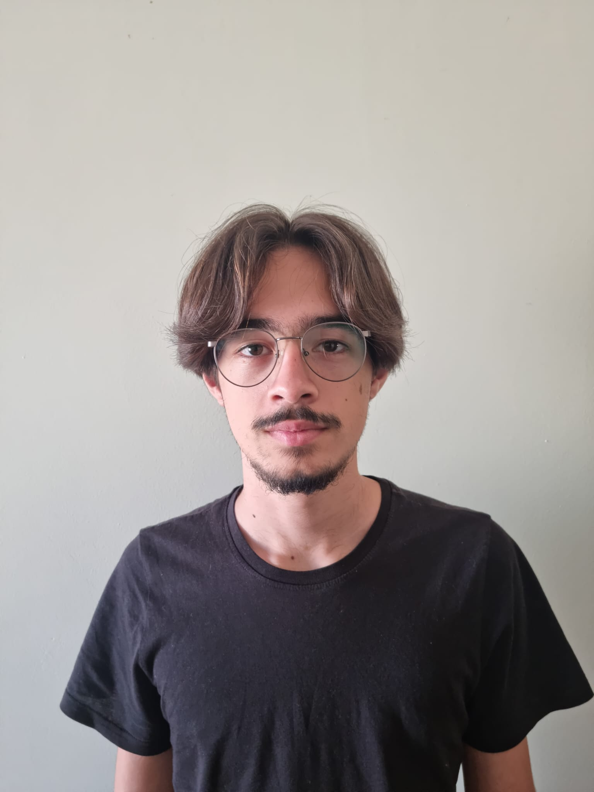
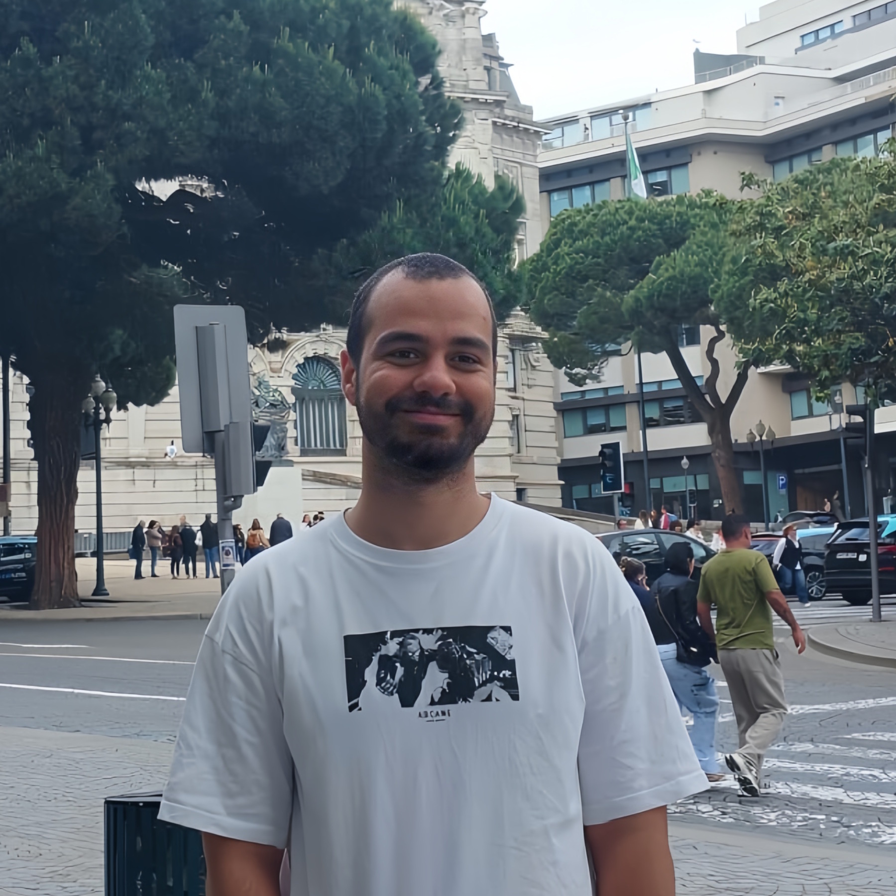
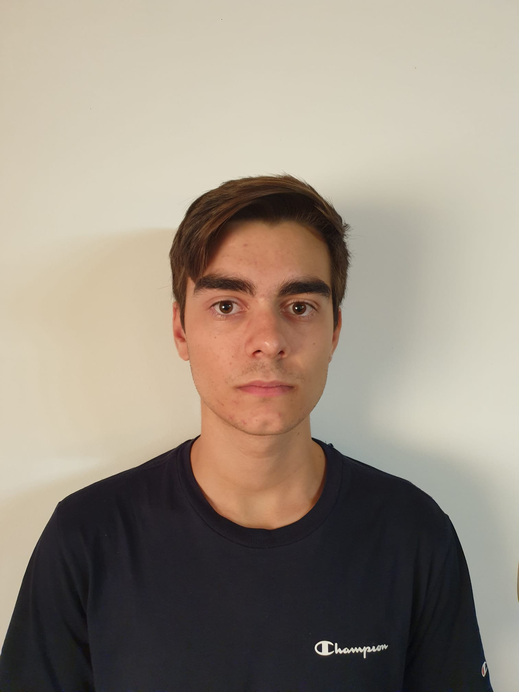
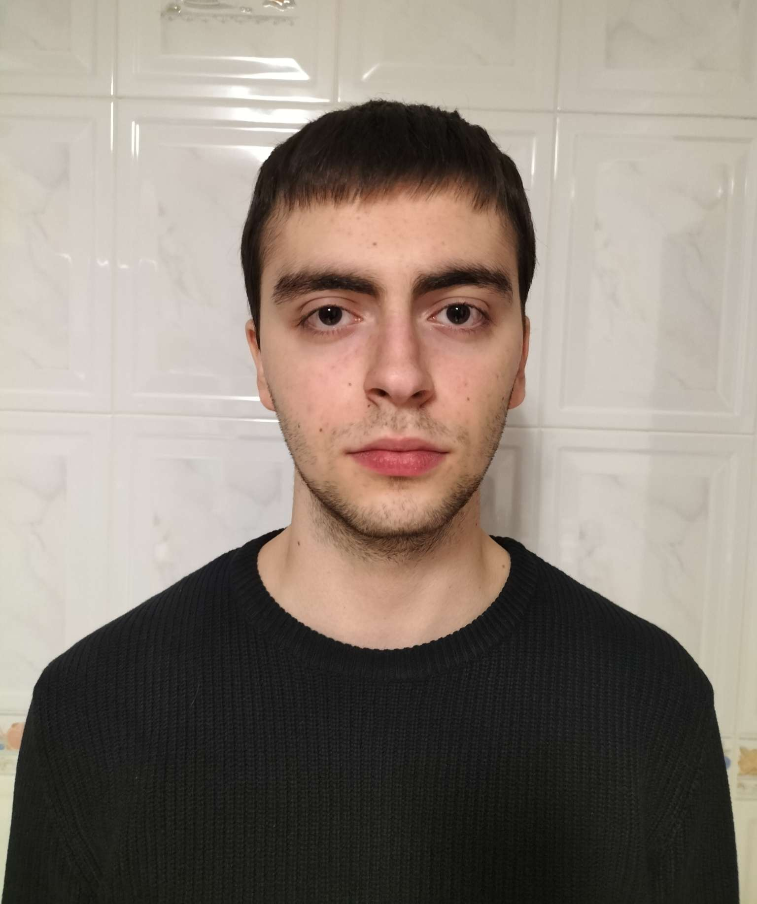
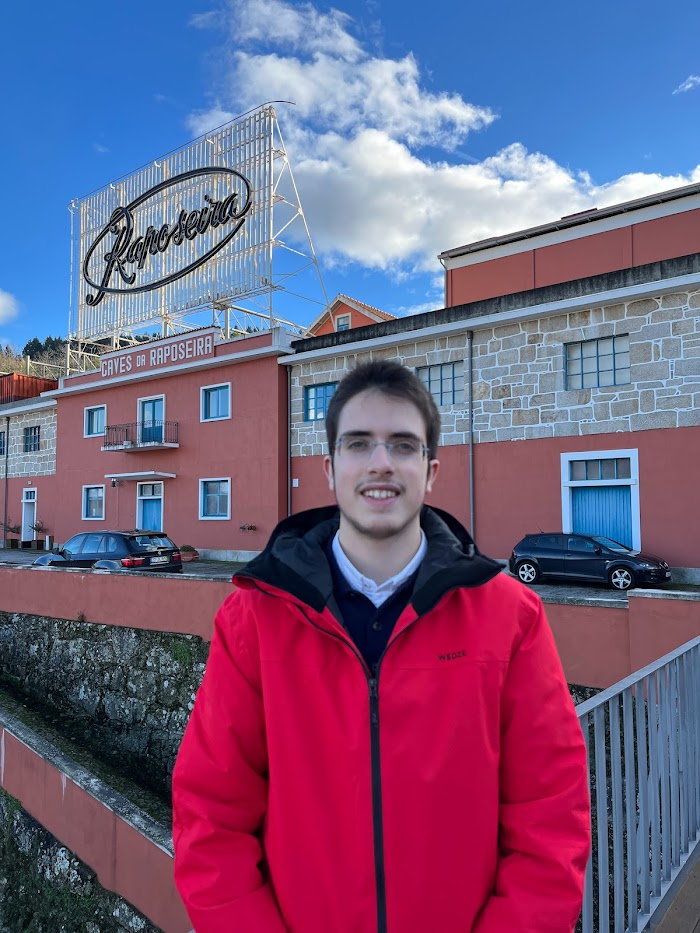

API UA
A secure, centralised platform for the University of Aveiro's web services — revived and reimagined from the ground up.
What is API UA?
The API UA project is, above all, a platform built for developers by developers. If you want to create your own applications using the university's data, this is your gateway.
Over a decade ago, students at the University of Aveiro developed an API gateway to centralise the institution's web services. Over time, the service was gradually discontinued. We are reviving and modernising this platform — centralising all of the university's web services into a single, unified system.
We deliver a developer-friendly experience featuring an intuitive, RapidAPI-like interface. Due to the restricted nature of certain university APIs, we implemented secure login functionality via Keycloak. Once authenticated, users can seamlessly test endpoints, build their apps, and interact with the data directly from the platform.
Authentication & Security
Secure login via Keycloak (IdP), JWT tokens and role-based access control — only authenticated users access private APIs.
WSO2 API Gateway
Single entry point for all APIs. Validates, authenticates, and routes every request to the correct service in the private network.
FastAPI Microservices
Legacy PHP APIs migrated to Python with FastAPI and containerised via Docker — Parking UA, SAS, Access Points, and Rss2Json.
Grafana Monitoring
Real-time dashboards via Grafana + Loki for log visualisation, metrics, and system health at a glance.
How We Built It
Our initial strategy was to configure STIC's WSO2 as the API Gateway, migrate the existing PHP APIs to Python, containerise them individually while maintaining endpoint compatibility, and centralise documentation on a dedicated website.
The legacy APIs were refactored into Python using FastAPI to minimise response latency and optimise performance. Each API runs in its own Docker container, ensuring full isolation within the private network.
Without direct university infrastructure support, we pivoted to deploying a local, independent WSO2 instance within our own private network — accurately simulating a real-world production scenario and maintaining all architectural goals.
WSO2 API Manager
Core gateway — sole component exposed to the external internet. Validates every incoming request.
Keycloak IdP
Mimics the university's Identity Provider. Handles OAuth2 / JWT token issuance and user authentication.
Docker & Compose
Each API and service runs in an isolated container. Ensures security, portability, and reproducibility.
Grafana + Loki
Real-time monitoring stack. Aggregates logs and metrics from all containers.
Mock API
Simulates future university services not yet available for integration testing.
System Architecture
The system runs on a private local network where WSO2 is the only component exposed to the internet. All FastAPI services, Keycloak, and the monitoring stack run in isolated Docker containers behind it.

Fig. 1 — Full API UA system architecture. Only WSO2 has access to the external internet from the private network.
Project Phases
Project Kickoff & Requirements
Initial meeting with supervisor, requirements gathering, scope definition, and study of the original platform (API @ UA, 2012). Literature review and related work analysis.
✓ CompletedM1 — Plan & Objectives
Presentation of project lifecycle objectives, related work overview, and development plan. Defined initial strategy: configure STIC's WSO2 and migrate PHP APIs to Python.
✓ CompletedM2 — Refactoring & Service Recovery
Detailed requirements presentation. Focused heavily on migrating the legacy PHP APIs to Python using the FastAPI framework, and successfully resuscitated the university's canteen (SAS) services to make them available once again.
✓ CompletedM3 — The Architectural Pivot
Major architectural pivot. After dropping the plan to integrate with STIC's infrastructure, we deployed an independent local setup. When the university's canteen services went down again, we rapidly developed a Mock API to demonstrate the platform's full potential and resilience.
✓ CompletedM4 — Final Product
All features implemented: Docusaurus site with interactive playground, four FastAPI containerised APIs, WSO2 gateway with security policies, Keycloak integration, and full Grafana dashboards.
✓ CompletedFinal Submission & Defence
Final report submission, public project defence, and full platform presentation. System architected for future integration into STIC's infrastructure at the University of Aveiro.
⧖ PendingTry the APIs
The Academic Playground & Innovation is the portal developed to interact with UA's APIs. After authentication, you can test each endpoint directly in the interface — with customisable parameters and real-time responses. Available publicly for learning and integration purposes.
Technical Reference
Complete system documentation — architecture, components, endpoints, security, monitoring, and all materials produced throughout the project.
Architecture
System diagram, design decisions, and data flow between components.
API Reference
Documented endpoints with request/response schemas and live examples.
Security & Auth
Keycloak authentication flows, JWT tokens, and WSO2 access policies.
Monitoring
Grafana + Loki stack — dashboards, logs, and real-time metrics.
Docker & Deploy
Docker Compose setup, network configuration, and environment variables.
Materials
Presentations, reports, and documents produced across all project phases.
Outcome & Impact
We successfully developed a secure, centralised platform for the university's web services. It features an intuitive interface for both developers and administrators that simplifies API management, access control, and request analytics.
Although built within a private network due to constraints in university support, this solution is highly portable and architected for future integration into STIC's infrastructure — requiring minimal configuration changes to deploy at scale.
Who We Are

Carlos Ramos

Pedro Ferreira
Dinis Bernardo

Simão Matos

Vasco Oliveira

André Reis
We are students at the Department of Electronics, Telecommunications and Informatics (DETI) at the University of Aveiro, completing our Bachelor's in Computer and Informatics Engineering as part of the PECI (Project in Computer and Informatics Engineering) unit.
The project was supervised by Prof. Diogo Gomes and represents the culmination of our undergraduate studies — bringing together distributed systems, security engineering, and software architecture into a real solution for the university.